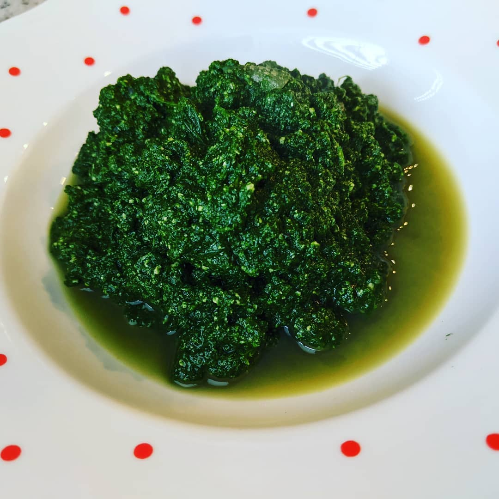

Dusený špenát podľa @kulinarskeumeni — Normy Jedál
Co si udělat v sobotu k obědu?
Co si dát špenát!
#obed #sobota #vikend #jimezdrave #zdravastrava #spenat #dusenyspenat #jidlo #kulinarskeumeni #jdemezrat #cibule #olej #cesnek #vejce #sul #pepr #varimeslaskou #dobrouchut